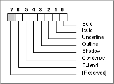

Legacy Document
Important: The information in this document is obsolete and should not be used for new development.
Important: The information in this document is obsolete and should not be used for new development.


The Font Style Code
A number of tables in the font family resource contain information that pertains only to a certain style. Actually, a style can be a combination of styles. The style code data type, which is used to represent a style in the tables in this resource, uses a single bit for each of the seven Macintosh character styles. You can set any of these bits to 1 in the style code element of a table to specify the unique style of the font to which that table applies. Although each table that contains a font style code allocates 2 bytes for the value, only the low-order byte of the value is used to specify the style code; the high-order byte is used internally by the Font Manager. The values of the bits in a style code element are shown in Figure 4-23.